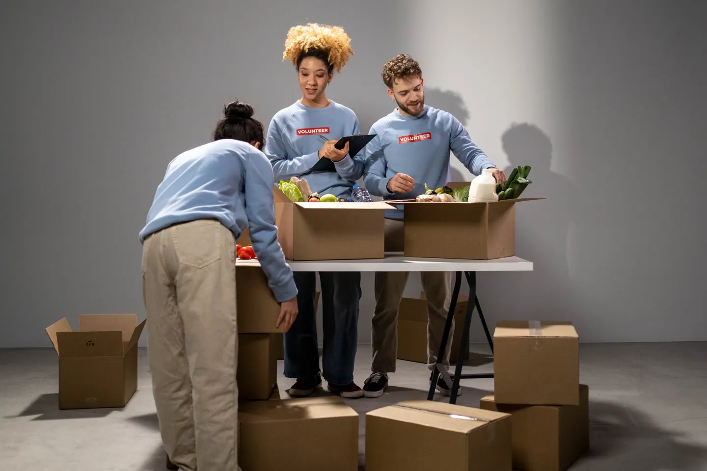
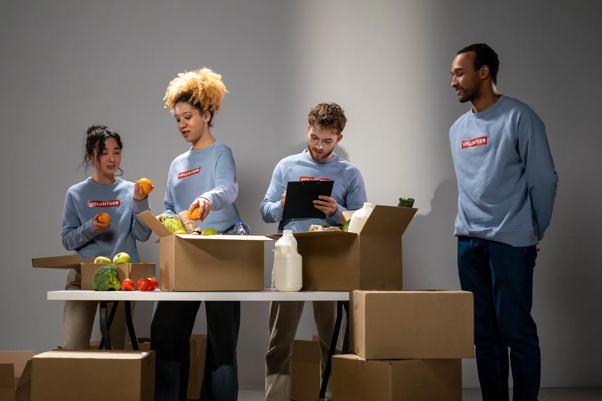
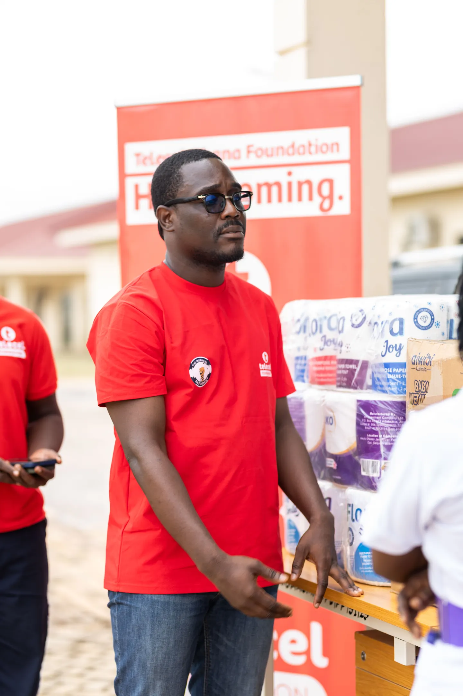
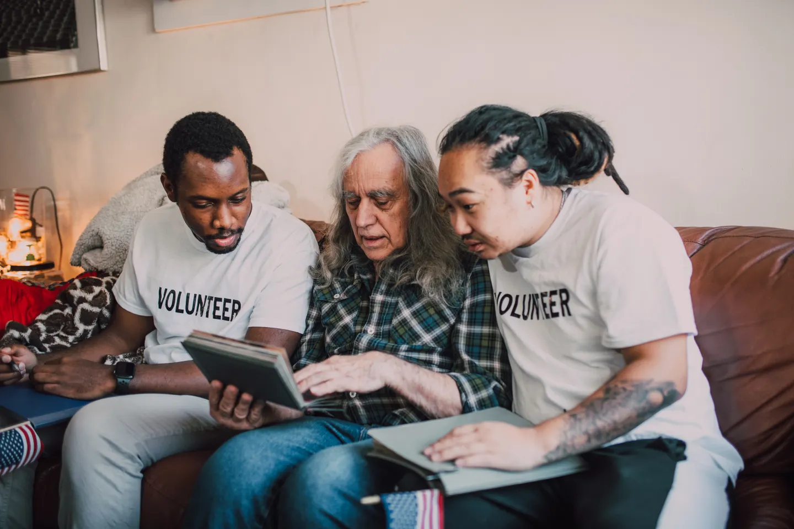
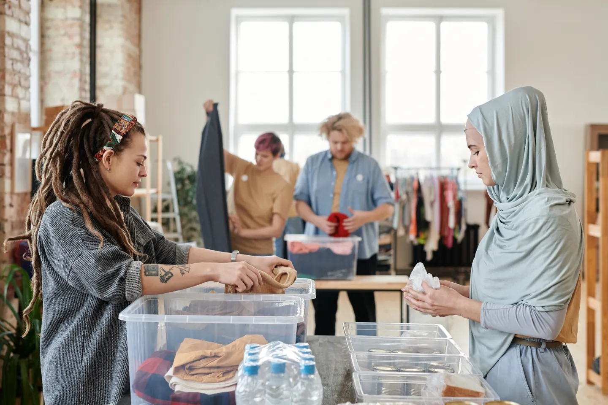
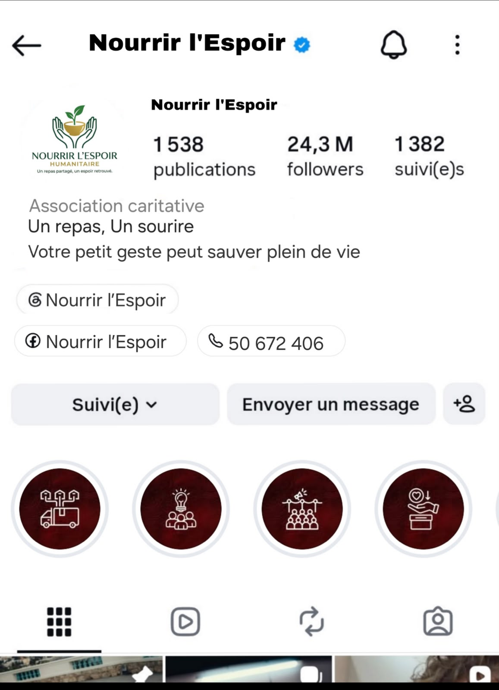

01 — ESSENTIEL
Aide alimentaire
Contribuer à l’accès à des repas et à des produits essentiels pour les personnes en situation de précarité.
En savoir plusUne association de solidarité
Nourrir l’Espoir Humanitaire agit avec cœur pour aider les personnes démunies, accompagner les familles et faire grandir la solidarité, un geste après l’autre.
La solidarité prend racine
dans les gestes du quotidien.
Ce qui nous anime
Nous croyons qu’une entraide attentive peut alléger le quotidien et rapprocher les personnes. Notre association rassemble les énergies autour de besoins essentiels, avec simplicité, respect et solidarité.
Qui sommes-nous ?Notre engagement
Notre action se construit avec les personnes, au plus près des besoins et des réalités de chacun.
01 — ESSENTIEL
Contribuer à l’accès à des repas et à des produits essentiels pour les personnes en situation de précarité.
En savoir plus02 — PROXIMITÉ
Écouter, orienter et accompagner les familles qui traversent une période difficile.
En savoir plus03 — LIEN SOCIAL
Créer des occasions de se mobiliser, de s’entraider et de faire vivre une communauté attentive.
Nous rejoindrePistes d’action · aide alimentaire
Des programmes qui pourraient être construits avec les familles et les partenaires locaux. Leur mise en œuvre reste à confirmer.

PROGRAMME PROPOSÉ · 01
Imaginer des paniers avec des produits adaptés aux besoins : pâtes, riz, semoule, conserves, huile et autres essentiels, selon les disponibilités et les habitudes des familles.
Participer à la préparationPROGRAMME PROPOSÉ · 02
Préparer ou partager des repas dans un cadre accueillant, en veillant au respect, à la dignité et aux besoins de chacun.
Aider lors d’un repas
PROGRAMME PROPOSÉ · 03
Mobiliser bénévoles, donateurs et partenaires autour de collectes de produits non périssables, puis organiser le tri et la préparation des dons.
Participer à une collecte
PROGRAMME PROPOSÉ · 04
Prendre le temps d’écouter les familles confrontées à des difficultés économiques et envisager, avec elles, une aide correspondant à leur situation.
S’engager auprès des famillesCes initiatives sont des projets proposés, pas des services annoncés comme déjà opérationnels. Les photos sont des illustrations de stock Pexels, sans lien avec les actions de l’association.
Pistes d’action · soutien aux familles
Des idées d’accompagnement à concevoir avec les personnes concernées, dans le respect de leur choix et de leur intimité.
UNE APPROCHE À IMAGINER
Chaque famille rencontre des réalités différentes. L’association souhaite construire des pistes de soutien adaptées, orienter vers les services appropriés et agir avec l’accord des personnes.
Devenir bénévole
01 · ÉCOUTE
Proposer une écoute attentive, une orientation vers les interlocuteurs adaptés et un accompagnement à définir avec chaque famille.
Proposer son aide02 · ENFANCE
Envisager un accès facilité aux fournitures scolaires, aux vêtements et aux produits essentiels selon les besoins exprimés.
Soutenir cette idée03 · APPRENTISSAGES
Imaginer un programme de bénévolat pour accompagner les élèves dans leurs devoirs et leurs apprentissages.
Aider aux devoirs04 · LIEN SOCIAL
Proposer des visites de convivialité et une aide pratique adaptée, avec le consentement des personnes et dans le respect de leur intimité.
Participer aux visites05 · ORIENTATION
Étudier un dispositif de solidarité qui pourrait orienter ou accompagner les familles confrontées à une situation urgente.
S’engager solidairementLes services ci-dessus sont des propositions à étudier ; ils ne sont pas présentés comme déjà disponibles.
Pistes d’action · engagement collectif
Des propositions pour accueillir les idées, le temps et les compétences de chacun, selon les moyens disponibles.

FAIRE SA PART, À SON RYTHME
La participation peut prendre plusieurs formes : préparer, organiser, accueillir, communiquer ou simplement prêter main-forte lors d’une initiative validée par l’équipe.
Découvrir le bénévolat01 · COLLECTER
Imaginer des collectes de vêtements, de fournitures scolaires, de produits alimentaires et d’autres biens essentiels.
Rejoindre une collecte02 · CONTRIBUER
Participer, selon ses envies et disponibilités, à la préparation, à la logistique, à la communication ou à l’accueil.
Devenir bénévole03 · RENDRE VISITE
Envisager des visites aux personnes âgées ou isolées, avec leur accord et dans le respect de leur intimité.
Proposer une visite04 · DONNER UNE SECONDE VIE
Organiser la collecte, le tri puis la remise de vêtements propres et en bon état, selon des modalités à définir.
Participer au tri05 · SE RASSEMBLER
Proposer des journées solidaires, des temps de sensibilisation et des activités qui encouragent l’entraide locale.
Prendre part à un événement06 · IMAGINER
Une journée annuelle de solidarité, « Un cartable pour chaque enfant », une collecte avant la rentrée, des ateliers de préparation ou une campagne anti-gaspillage alimentaire.
Partager une idéeCes campagnes et rendez-vous sont des idées de projet, sans date ni réalisation annoncée à ce jour.
La solidarité ne se mesure pas à la taille du geste,
mais à l’attention qu’on y met.
Le collectif
Les portraits affichés proviennent des photos transmises. Ramzi est représenté par un avatar graphique au monogramme R.
À venir, ensemble
Les formats ci-dessous sont des idées d’actions. Dates et modalités seront annoncées après validation par l’association.
Une collecte de produits essentiels peut être organisée selon les besoins identifiés.
Un temps convivial autour d’un repas pour faire vivre l’entraide et le lien social.
Un rendez-vous pour accueillir les personnes qui souhaitent donner un peu de leur temps.
Illustrations originales créées pour le site — elles ne représentent pas des événements déjà réalisés.
Solidarité en images
La future vidéo pourra raconter la préparation des paniers, les collectes, l’entraide et la dignité qui guident chaque projet.
Photo d’illustration : cottonbro studio / Pexels · vidéo officielle à fournir.
Sur Instagram
Un aperçu du profil de Nourrir l’Espoir, partagé par l’association. Sa capture originale est présentée ici dans un cadre pensé pour le site.

Rejoindre la communauté
Choisissez la manière dont vous aimeriez contribuer. L’équipe pourra ensuite préciser les modalités réelles de participation.
Cette maquette ne crée pas d’inscription officielle et ne collecte aucune donnée.
Faire un don
Les modalités officielles de contribution seront ajoutées lorsque l’association les aura confirmées. Aucun paiement en ligne n’est activé.